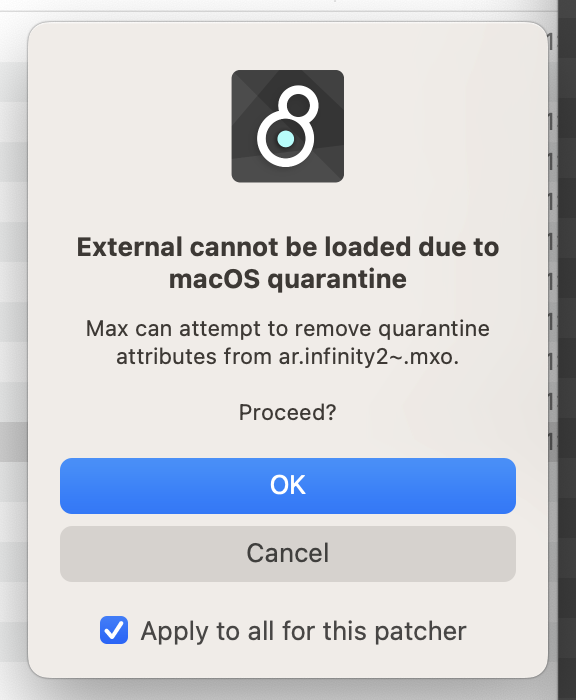

Installation
-
Download the latest benny and extract the whole folder.
At the moment, benny follows a continuous update schedule. You can get the latest version by downloading it and unzipping it over the top of your current benny install. Or it's slightly more convenient to use a 'git' client (github desktop is free and fine for this). First 'clone' the benny repository and then just 'fetch' every time you want an update.
-
Install Max. You don't need to buy Max in order to use benny, or even start the free trial - benny will work 100% with max in unregistered mode. But if you want to build your own blocks you will need to buy or subscribe. (Please do not bother cycling74 support with problems with benny! We have a forum for that.)
-
If you have ableton and max for live installed already, be sure to use the latest version of max 8 to run benny. It will crash if you use an out of date version, such as the one ableton may have installed for max for live.
-
A few blocks require Airwindows console 7 VSTs. They're included in the download, look in the VST dependencies subfolder and install the ones you need for your system.
Windows users should install VSTs to C:\Program Files\VSTPlugins otherwise max/msp may not see them. apple users are suggested to copy the files to /Library/Audio/Plug-Ins/VST
-
(optional) extras to install via the max package manager (file/package manager):
-
ableton link - to enable ableton link support in benny for syncing to other devices
-
HISStools - to enable the fx.convolve block
-
monome - if you want to use monome devices with benny
-
you dont need to install the abl devices package, the actual effects are already in a max 9 installation.
-
-
Open 'benny.maxproj'. The benny launcher window will appear.
-
Open the audio settings and choose which audio driver/interface to use. Generally ASIO drivers are best.
The dropdown contains a list of example hardware configurations. Choose the 'no hardware.json' one then press the start button to try benny out using just the default stereo io on your computer.
To set benny up for seamless integration with your midi controllers, modular synth, keyboards, drum machines, synths, microphones, pedals, and outboard effects you'll need to make your own hardware configuration file.
Hardware configuration
To use your hardware fluidly within benny you need to build a configuration file. It will tell benny about each piece of hardware that is connected to your computer, and they will appear as blocks.
If you change your hardware setup benny can help you migrate songs from the old to the new, letting you choose substitutes for missing or replaced items.
In my usage I have a configuration file for each iteration of my live touring setup, a different one for a setup I have at home and a setup for the studio with my synths and outboard compressors available as individual blocks.
Open the hardware manager from the benny launcher window. Choose a hardware config file to start from and click the open button. The hardware manager will show you 4 sections:
Keyboards
This section lists the available midi inputs. If an input doesn't show up here go to options / midi setup and make sure it's showing up in max. On my PC I seem to need to have everything connected and turned on before starting max. You can toggle each one on or off, the selected ones will be available in the core.input.keyboard block for mapping / automapping.
Controllers
This section lets you define all your midi controllers. The ones you set up will be available in the core.input.control blocks. Benny supports incremental encoder and potentiometer input, value feedback, buttons, button assign to global functions, and led indicators.
There are example files included that might help - so far i've made configs for:
-
Midi Fighter Twister (recommended, the led feedback works well with the automapping features in benny) NOTE the midi fighter twister needs to be outputting encoder messages not cc ones from its knobs, the factory default settings for the midi fighter won't work with my configs. In
benny\hardware_configs\preset files for common controllersyou'll find settings to load onto your midi fighter with the midi fighter utility. -
Novation launch control xl
-
Akai lpd8 mk2 (not recommended, incomplete midi implementation)
(todo: a library of presets for controller setup, support for more brands' led protocols)
Hardware
This section tells benny which inputs and outputs of the computer each piece of hardware is connected to. You can set up audio ins and outs, midi ins and outs, and if your system includes a midi controlled matrix switch (eg alyseum's matrix ii module) you can set up io for that too.
(todo: setting up parameters that send midi ccs or sysex to hardware devices - ccs already work if you manually edit the hardware .json file, see the midi drum machine example file)
The hardware manager lets you send out test signals to any audio output you're setting up and also shows a meter for any inputs you set up.
Advanced
Here you can select if you have a supported midi controlled matrix switch in your system, or if your soundcard driver has a matrix mixer that benny can control (currently only RME totalmix).
RME Totalmix
If you're using this brand benny can control the soundcard mixer via OSC and make hardware-hardware connections directly in the soundcard DSP. This reduces the latency of this connection from 2x io vectorsize to around 40 samples.
For it to work you need to select the RME driver in the dropdown in this section and enable OSC control in Totalmix. benny is locked to the default totalmix port etc..
This feature is experimental. At the moment we don't have a way to show these signals on benny's meters.
Latency measurement
The self-tuning midi to cv block in benny is very robust if (and only if) it has an accurate latency measurement for the system. Once you've set up your hardware, use this section to perform a loop latency test. Pick a hardware device that will pass audio back to benny in the dropdown and press the round button until the value stabilises.
The hardware configuration isn't saved until you click save or save as at the top of the page
VST / AMXD configuration
To use a VST plugin in benny you need to set it up in the VST / AMXD manager which you open from the benny launcher window. First run the VST plugin scanner and wait until the progress bar has finished.
Windows users should install VSTs to C:\Program Files\VSTPlugins otherwise max/msp may not see them.
benny comes with a library of config files for VST plugins that we have already encountered. When you run the scan these will be set up automatically, but you are free to make your own edits.
If your plugin is not automatically added to benny you can set it up in the VST manager. You need to tell it which parameters you want to see, and what order they should appear in. At the moment it lets you assign them to 4 groups (1 group = 1 row of sliders in the benny interface).
If you've done a complete and useable configuration for a plugin please do post the .json file (found in benny/audio_blocks) on the discussions pages and we'll add it to the library.
Max for live devices (AMXD's) are set up similarly, but at present there is no scanner or library for these. Just press the 'add AMXD' button to browse for an AMXD file to import. Devices that use the live API (eg ones that manipulate live sets, or work with modulation inside live) aren't likely to work in benny, but most simple synths and effects do.
Preferences
All the main visual/ui preferences can be changed by clicking the ui preferences button. The preferences editor saves your changes instantly but you need to fully close out of benny and restart for them to take effect.
If the glow effect is too much for your taste it can be altered here.
If you'd like different blocks present at startup you can save over autoload.json in the templates folder.
Ableton Link
Benny supports ableton link, but you need to install the ableton link package into max yourself. Open max, and in a max window go file / package manager and search for ableton link. click install, then close max and open benny. You'll find a button to enable link at the bottom of the clock block's controls, and also in the midi indicators sidebar view (reached by clicking the midi indicators, which are the dots just right of the play button).
When link is enabled the play button turns green.
MIDI clock sync
Currently benny can send midi clock (and start/stop) messages out to any devices you configure in the hardware manager. When you stop benny it doesn't stop the external clocks, and when you press play again benny waits for the start of the next bar before joining in in time.
There's an 'external midi clock' block that can receive midi clock from hardware and pipe divisions of it into benny, but this does not (yet) affect the main transport.
When external sync is enabled the play button turns an orange/coral shade.
Recommended computer specs
benny is fairly resource intensive, though is now a lot more efficient than the early versions were. There are a few settings you can alter for lower power systems below.
The audio side of benny takes full advantage of multi core CPUs (afaik this is an advantage over hosting patches in Max for Live, which last time I checked, doesn't).
We've tested benny on a range of systems and it should be useable on: - mid range laptops with integrated graphics from the last few years (eg 10th gen core i7, M2) - gaming laptops with discrete graphics from the last decade (eg 7th gen core i7 with nvidia 970) - desktop computers with any mid-range gpu from the last decade or more
Resource usage sidebar
benny shows a CPU meter to the left of the play button. You can press F12 to show the resource usage sidebar, which shows CPU usage history (yellow, lower better) and framerate history (white dots, higher better).
Settings that affect GPU usage:
- Wire segment count. Low end GPUs struggle with the number of polygons needed to make smooth wires. The two settings:
"MAX_BEZIER_SEGMENTS"and"MIN_BEZIER_SEGMENTS"control this. The numbers need to be divisible by 4 and MIN must be < MAX - when loading patches it initially draws the min number then upgrades the wires when it is idle to speed up loading. Defaults are 16 / 8.
Settings that affect CPU usage:
-
The maximum number of audio blocks & the number of hardware IO have a big effect on the baseline CPU usage. On mid range hardware the default (64) seems fine, and supports fairly complex song patches. On high end hardware much higher values are possible. On very low end computers you could reduce this to lower the baseline CPU load. Look for
"MAX_AUDIO_VOICES"in the preferences list. -
The scopes and audio to data conversion in benny do use quite a lot of cpu. If you increase
"AUDIO_TO_DATA_DOWNSAMPLING"to eg 4 or 8 it'll save up to 10% cpu (on a low end system running a large patch), at the expense of some accuracy in audio to data conversion and the maximum zoom in available in the sidebar scopes. -
The 'vector size' of audio processing also has a big effect. This is the size (in samples) of the chunks of audio worked on by each stage of processing in benny. Decreasing it rapidly increases CPU usage. Find this in the audio settings dialog (there's a button to open it on the benny launcher window).
Because of a limitation of benny's architecture every audio connection adds latency proportional to this value, and while it's possible to offset clocks (and other transport-linked blocks eg wave scan blocks also have time offsets) it obviously pays to keep this as low as your computer can manage. On mid range hardware 256 samples is a good target, 64 is a sensible minimum for high end systems.
-
Upsampling is a common simple way to mitigate aliasing in harmonics generated by digital processing. Most of benny's non-linear audio blocks default to upsampling x2 as it makes a noticeable difference to the clarity of the sound. However upsampling obviously increases the CPU usage. You can adjust it (from 1x-128x) in the sidebar settings section for the block, or the
"UPSAMPLING"setting can be unticked to disable upsampling for all blocks on a particular computer (for example if your main computer is lost or broken and you borrow a less powerful one to run your set). -
Max Scheduler max has some options for how the underlying engine balances the various kinds of tasks it has to perform. If you use blocks that have particularly involved chains of events in their note processing you may run into irregular timing. Adding the following key to userconfig.json can help:
-
Hardware Recording in order to be able to record directly from external hardware benny has to create a few objects in the max patch. These use a tiny bit of CPU. If you have lots of channels of external hardware and are struggling for CPU then unticking the ui preferences setting
"ENABLE_RECORD_HARDWARE"might help a little. -
If you are on a very high DPI screen you can increase
"CLICK_BUFFER_SCALEDOWN"from its default of 2, which will slightly reduce the cpu cost of full screen redraws when they happen.
Installation Troubleshooting FAQ
-
The benny window that comes up when I press start is grey
Open max, go in options / preferences / jitter preferences and make sure 'graphics engine' is set to glcore. (This issue only happens if you've had this max installation on your pc for a long while)
-
(macOS) I get the following messages in the max console and benny won't open
openactions.txt : can't load, error -1 benny_engine.maxpat : can't open benny_engine.maxpat : can't open, error 0The person who encountered this found that openactions.txt was set to open with text edit, changing it to open with max solved the problem.
-
(macOS) I get a warning box: External cannot be loaded due to macOS quarantine

Just click OK as many times as it takes for these to go away, there's nothing to worry about here. Note this only happens if you download and unzip, if you use git (or github desktop or etc) to get benny and keep it up to date the files aren't flagged for quarantine.
-
(macOS) benny crashes on first run, or does not show the blocks menu on first run
In rare cases this seems to happen? the solution is to force close max and try a second time.